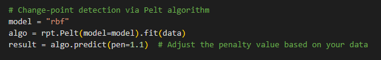

We used a line graph model
and identified peaks, change points, and linear regressions.
Here is the final model that we obtained. We'll explain each part of this image in the succeeding parts.
Here is the final model that we obtained. We'll explain each part of this image in the succeeding parts.
A time series graph plots a line to show how a variable changes over time. In this case, we let the x-axis be time (in months) and the y-axis be the frequency of tweets.
From the data, we identified the peaks by using a method from the scipy Python package. You can find the codes we used in this Colab notebook. The parameters we used are shown here:
The main parameters we changed are the height and the distance. The height parameter is set to 6 to mean that we would only consider months with at least 6 tweets. Having 5 or less was too few to be considered a peak, even if it was locally higher than neighboring months.
The distance parameter refers to how many months apart peaks should at least be. This was important so that only the most significant peak in every 6 months would be highlighted. This is the resulting graph with peaks marked:
Change points are the markers in time where the trend in data significantly changed. To detect these points, we use Pelt's algorithm, as implemented by the ruptures Python package. The parameters we used are shown here:
The penalty was set to 1.1 because a smaller value at 0.9 would create too many time periods already, some of which had no corresponding historical events. On the other hand, setting the penalty to at least 1.2 would create a large period in the middle spanning 2018 to 2021. As such, we decided that 1.1 was the most suitable penalty value for our model.
The change points are marked by the red dashed vertical lines.
Based on the separation marked by the change points, we applied a linear regression to each time period. We did this using a function by the numpy Python package. The relevant code snippet is shown here:
The line was fitted to follow the least squares error, and we also note that the slope and mean for each period is saved to certain lists. We will need those values later for our statistical tests! Here is the resulting segmented linear regression, marked in green:
While this is outside the scope of our study, our group decided to mark some dates when fact checking articles were published on the topic of the Philippines' false wealth. For further research, one could examine if the emergence of these articles played a part in lowering the amount of misinformation being posted online.
Putting everything together, we obtain our full model:
We can see that the change points were able to divide the time period into the three election periods. However, we did not expect that the 2022 election period could be split into the campaigning period and election date period! It makes sense that the campaign period would introduce a sudden spike as propaganda appears again after the inactivity of non-election periods, while the months near the election date feature a steadier level of engagement but at a higher mean.
For the peaks, a clear peak was identified in each of the significant election periods, while no peaks were found in non-election periods, which supports our idea that elections influence the level of engagement with this topic.